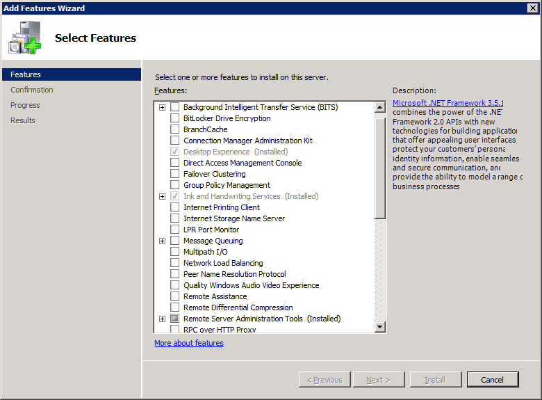
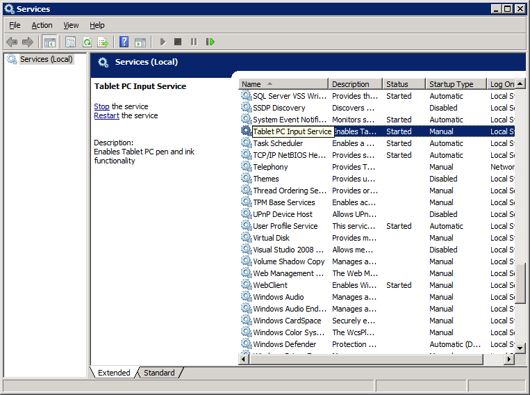
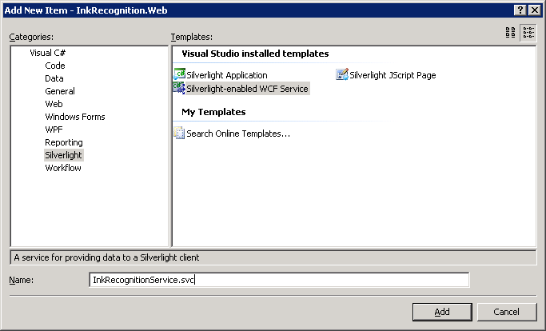
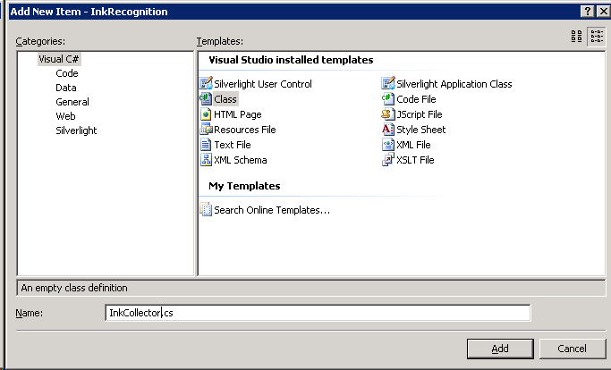

Select features dialog box with ink and handwriting services check box selected
Select features dialog box with ink and handwriting services check box selectedWindows Server 2008 R2 supports server-side handwriting recognition. Server-side recognition lets a server recognize content from pen input on Web pages. This is particularly useful when users on a network will be specifying terms that are interpreted using a custom dictionary. For example, if you had a medical application that queried a server database for patient names, those names could be added to another database that would be cross-referenced when performing searches from a handwritten Silverlight form.
The following steps should be followed to set up server-side recognition.
To install Ink and Handwriting services, open the server manager by clicking the server manager icon from the Quick Launch tray. From the Features menu, click Add Features. Make sure that you select the Ink and Handwriting Services check box. The following image shows the Select Features dialog box with Ink and Handwriting Services selected.
Select features dialog box with ink and handwriting services check box selected
Open the server manager as you did for the first step. Next, you will need to add the Web Server (IIS) and Application Server roles. From the Roles menu, click Add Roles. The Add Roles wizard appears. Click Next. Make sure Application Server and Web Server (IIS) are selected. The following image shows the Select Server Roles dialog box with the Web Server (IIS) and Application Server roles selected.
 Select server roles dialog box with web server (iis) and application server roles selected
Select server roles dialog box with web server (iis) and application server roles selected
When you select Application Server, you will be asked to install the ASP.NET framework. Click the Add the Required Features button. After you click Next, you will be presented with an overview dialog box; click Next. The Select Role Services dialog box should now be available. Make sure that Web Server (IIS) is selected. The following image shows the Select Role Services dialog box with Web Server (IIS) enabled.
 Select role services dialog box with web server (iis) enabled
Select role services dialog box with web server (iis) enabled
Click Next. An overview dialog box appears; click Next again. You will now be presented with a page offering you options for roles for Web Server (IIS). Click Next. On the next page, the Install button will become active. Click Install and you will install support for Web Server (IIS) and Application Server.
To enable the desktop experience, click Start, click Administrative Tools, and then click Server Manager. Select Add Services and then select the Desktop Experience service. The following image shows the Select Features dialog box with the Desktop Experience item installed.
 Select features dialog box with desktop experience service selected
Click Next to install the Desktop Experience.
After you have installed the Desktop Experience service, the Tablet PC Input service will appear in the Services menu. To access the Services menu, click Start, click Administrative Tools, and then click Services. To start the service, right-click Tablet PC Input Service and then click Start. The following image shows the Services menu with the Tablet PC Input Service started.
 Services menu with the tablet pc input service started
This section shows how to create a Web application that uses Silverlight to capture handwriting input. Use the following steps to program the recognizer in Visual Studio 2008.
Before you begin, you must perform the following steps on your Windows Server 2008 R2 server.
After you have installed these applications and updates, you are ready to create your server-side recognition Web application.
From the File menu, click New Project. Select the Silverlight Application template from the Visual C# project list. Name your project InkRecognition and click OK. The following image shows the C# Silverlight project selected and named InkRecognition.
c# silverlight project selected, with the name inkrecognition
After you click OK, a dialog box prompts you to add a Silverlight application to your project. Select Add a new ASP.NET Web project to the solution to host Silverlight and click OK. The following image shows how to set up the example project before you click OK.
Dialog box with prompt for adding a silverlight application to a project
Now you have your generic Silverlight client project (InkRecognition) with a Web project (InkRecognition.Web) set up in your solution. The project will open with Page.xaml and Default.aspx open. Close these windows and add the System.Runtime.Serialization and System.ServiceModel references to the InkRecognition project by right-clicking on the references folder in the InkRecognition project and selecting Add Reference. The following image shows the dialog box with the requisite references selected.
 Add references dialog box with system.runtime.serialization and system.servicemodel selected
Add references dialog box with system.runtime.serialization and system.servicemodel selected
Next, you need to add the System.ServiceModel and Microsoft.Ink references to the InkRecognition.Web project. The Microsoft.Ink reference will not appear in the .NET references by default, so search your Windows folder for Microsoft.Ink.dll. After you have located the DLL, add the assembly to the project references: select the Browse tab, change to the folder containing Microsoft.Ink.dll, select Microsoft.Ink.dll, and then click OK. The following image shows the project's solution in Windows Explorer with all of the reference assemblies added.
 inkrecognition project in windows explorer with all reference assemblies added
inkrecognition project in windows explorer with all reference assemblies added
Next, you will add a WCF service for ink recognition to the project. Right-click your InkRecognition.Web project, click Add, and then click New Item. Select the WCF Silverlight Service template, change the name to InkRecogitionService, and then click Add. The following image shows the Add New Item dialog box with the Silverlight WCF service selected and named.
 Add new item dialog box with silverlight wcf service selected and named
After you add the WCF Silverlight service, the service code behind, InkRecognitionService.cs, will open. Replace the service code with the following code.
using System;
using System.Linq;
using System.Runtime.Serialization;
using System.ServiceModel;
using System.ServiceModel.Activation;
using System.Collections.Generic;
using System.Text;
using Microsoft.Ink;
namespace InkRecognition.Web
{
[ServiceContract(Namespace = "")]
[AspNetCompatibilityRequirements(RequirementsMode = AspNetCompatibilityRequirementsMode.Allowed)]
public class InkRecognitionService
{
[OperationContract]
public string[] Recognize(int[][] packets)
{
// Deserialize ink.
Ink ink = new Ink();
Tablet tablet = new Tablets().DefaultTablet;
TabletPropertyDescriptionCollection desc = new TabletPropertyDescriptionCollection();
desc.Add(new TabletPropertyDescription(PacketProperty.X, tablet.GetPropertyMetrics(PacketProperty.X)));
desc.Add(new TabletPropertyDescription(PacketProperty.Y, tablet.GetPropertyMetrics(PacketProperty.Y)));
int numOfStrokes = packets.GetUpperBound(0) + 1;
for (int i = 0; i < numOfStrokes; i++)
{
ink.CreateStroke(packets[i], desc);
}
// Recognize ink.
RecognitionStatus recoStatus;
RecognizerContext recoContext = new RecognizerContext();
recoContext.RecognitionFlags = RecognitionModes.LineMode | RecognitionModes.TopInkBreaksOnly;
recoContext.Strokes = ink.Strokes;
RecognitionResult recoResult = recoContext.Recognize(out recoStatus);
RecognitionAlternates alternates = recoResult.GetAlternatesFromSelection();
string[] results = new string[alternates.Count];
for (int i = 0; i < alternates.Count; i++)
{
results[i] = alternates[i].ToString();
}
// Send results to client.
return results;
}
}
}
Now that you have your Silverlight WCF service for InkRecognition, you will consume the service from your client application. Right-click the InkRecognition project and select Add Service Reference. From the Add Service Reference dialog box that appears, select Discover to discover services from the current solution. InkRecognitionService will appear in the Services pane. Double-click InkRecognitionService from the Services pane, change the namespace to InkRecognitionServiceReference, and then click OK. The following image shows the Add Service Reference dialog box with InkRecognitionService selected and the namespace changed.
 Add service reference dialog box with inkrecognitionservice selected and namespace changed
Add service reference dialog box with inkrecognitionservice selected and namespace changed
Right-click the InkRecognition project, click Add, and then click New Item. From the Visual C# menu, select C# class. Name the class InkCollector. The following image shows the dialog box with the C# class selected and named.
 Add new item dialog box with c# class selected and named
After you add the InkCollector class, the class definition will open. Replace the code in the Ink Collector with the following code.
using System;
using System.Net;
using System.Windows;
using System.Windows.Controls;
using System.Windows.Documents;
using System.Windows.Ink;
using System.Windows.Input;
using System.Windows.Media;
using System.Windows.Media.Animation;
using System.Windows.Shapes;
namespace InkRecognition
{
public class InkCollector : IDisposable
{
public InkCollector(InkPresenter presenter)
{
_presenter = presenter;
_presenter.Cursor = Cursors.Stylus;
_presenter.MouseLeftButtonDown += new MouseButtonEventHandler(_presenter_MouseLeftButtonDown);
_presenter.MouseMove += new MouseEventHandler(_presenter_MouseMove);
_presenter.MouseLeftButtonUp += new MouseButtonEventHandler(_presenter_MouseLeftButtonUp);
}
void _presenter_MouseLeftButtonDown(object sender, MouseButtonEventArgs e)
{
_presenter.CaptureMouse();
if (!e.StylusDevice.Inverted)
{
_presenter.Cursor = Cursors.Stylus;
_stroke = new Stroke(e.StylusDevice.GetStylusPoints(_presenter));
_stroke.DrawingAttributes = _drawingAttributes;
_presenter.Strokes.Add(_stroke);
}
else
{
_presenter.Cursor = Cursors.Eraser;
_erasePoints = e.StylusDevice.GetStylusPoints(_presenter);
}
}
void _presenter_MouseMove(object sender, MouseEventArgs e)
{
if (!e.StylusDevice.Inverted)
{
_presenter.Cursor = Cursors.Stylus;
}
else
{
_presenter.Cursor = Cursors.Eraser;
}
if (_stroke != null)
{
_stroke.StylusPoints.Add(e.StylusDevice.GetStylusPoints(_presenter));
}
else if (_erasePoints != null)
{
_erasePoints.Add(e.StylusDevice.GetStylusPoints(_presenter));
StrokeCollection hitStrokes = _presenter.Strokes.HitTest(_erasePoints);
if (hitStrokes.Count > 0)
{
foreach (Stroke hitStroke in hitStrokes)
{
_presenter.Strokes.Remove(hitStroke);
}
}
}
}
void _presenter_MouseLeftButtonUp(object sender, MouseButtonEventArgs e)
{
_presenter.ReleaseMouseCapture();
if (_stroke != null)
{
_stroke.StylusPoints.Add(e.StylusDevice.GetStylusPoints(_presenter));
}
_stroke = null;
_erasePoints = null;
}
public DrawingAttributes DefaultDrawingAttributes
{
get { return _drawingAttributes; }
set { _drawingAttributes = value; }
}
public void Dispose()
{
_presenter.MouseLeftButtonDown -= new MouseButtonEventHandler(_presenter_MouseLeftButtonDown);
_presenter.MouseMove -= new MouseEventHandler(_presenter_MouseMove);
_presenter.MouseLeftButtonUp -= new MouseButtonEventHandler(_presenter_MouseLeftButtonUp);
_presenter = null;
}
private InkPresenter _presenter = null;
private Stroke _stroke = null;
private StylusPointCollection _erasePoints = null;
private DrawingAttributes _drawingAttributes = new DrawingAttributes();
}
}
Now that you have a class that collects ink, you will need to update the XAML in page.xaml with the following XAML. The following code adds a yellow gradient to the input area, an InkCanvas control, and a button that will trigger recognition.
<UserControl x:Class="InkRecognition.Page"
xmlns="http://schemas.microsoft.com/winfx/2006/xaml/presentation"
xmlns:x="http://schemas.microsoft.com/winfx/2006/xaml">
<Grid x:Name="LayoutRoot" Background="White">
<Grid.RowDefinitions>
<RowDefinition Height="Auto"/>
<RowDefinition Height="Auto"/>
</Grid.RowDefinitions>
<Border Margin="5" Grid.Row="0" BorderThickness="4" BorderBrush="Black" CornerRadius="5" Height="200">
<Grid>
<InkPresenter x:Name="inkCanvas">
<InkPresenter.Background>
<LinearGradientBrush StartPoint="0.5,0" EndPoint="0.5,1">
<GradientStop Offset="0" Color="Yellow"/>
<GradientStop Offset="1" Color="LightYellow"/>
</LinearGradientBrush>
</InkPresenter.Background>
</InkPresenter>
<Button Grid.Row="0" HorizontalAlignment="Right" VerticalAlignment="Bottom" Margin="10" Content="Recognize" Click="RecoButton_Click"/>
</Grid>
</Border>
<Grid Grid.Row="1">
<Grid.ColumnDefinitions>
<ColumnDefinition Width="Auto"/>
<ColumnDefinition Width="*"/>
</Grid.ColumnDefinitions>
<TextBlock Grid.Column="0" FontSize="28" Text="Result: "/>
<ComboBox x:Name="results" Grid.Column="1" FontSize="28"/>
</Grid>
</Grid>
</UserControl>
Replace the code behind page, Page.xaml.cs, with the following code that will add an event handler for the Recognize button.
using System;
using System.Collections.Generic;
using System.Collections.ObjectModel;
using System.Linq;
using System.Net;
using System.Windows;
using System.Windows.Controls;
using System.Windows.Ink;
using System.Windows.Input;
using System.Windows.Media;
using System.Windows.Media.Animation;
using System.Windows.Shapes;
using InkRecognition.InkRecognitionServiceReference;
namespace InkRecognition
{
public partial class Page : UserControl
{
public Page()
{
InitializeComponent();
inkCol = new InkCollector(inkCanvas);
recoClient = new InkRecognitionServiceClient();
recoClient.RecognizeCompleted += new EventHandler<RecognizeCompletedEventArgs>(recoClient_RecognizeCompleted);
}
private void RecoButton_Click(object sender, RoutedEventArgs e)
{
// Serialize the ink into an array on ints.
ObservableCollection<ObservableCollection<int>> packets = new ObservableCollection<ObservableCollection<int>>();
double pixelToHimetricMultiplier = 2540d / 96d;
foreach (Stroke stroke in inkCanvas.Strokes)
{
packets.Add(new ObservableCollection<int>());
int index = inkCanvas.Strokes.IndexOf(stroke);
for (int i = 0; i < stroke.StylusPoints.Count; i += 2)
{
packets[index].Add(Convert.ToInt32(stroke.StylusPoints[i].X * pixelToHimetricMultiplier));
packets[index].Add(Convert.ToInt32(stroke.StylusPoints[i].Y * pixelToHimetricMultiplier));
}
}
// Call the Web service.
recoClient.RecognizeAsync(packets);
}
void recoClient_RecognizeCompleted(object sender, RecognizeCompletedEventArgs e)
{
// We have received results from the server, now display them.
results.ItemsSource = e.Result;
UpdateLayout();
results.SelectedIndex = 0;
inkCanvas.Strokes.Clear();
}
private InkRecognitionServiceClient recoClient = null;
private InkCollector inkCol = null;
}
}
Before you can consume the WCF service, you must remove all secure transport options from the service configuration because secure transports are not currently supported in Silverlight 2.0 WCF services. From the InkRecognition project, update the security settings in ServiceReferences.ClientConfig. Change the security XML from
<security mode="None">
<transport>
<extendedProtectionPolicy policyEnforcement="WhenSupported" />
</transport>
</security>
to
<security mode="None"/>
Now, your application should run. The following image shows how the application looks within awebpagewith some handwriting entered into the recognition box.
Application within awebpagewith some handwriting entered into recognition box
The following image shows the recognized text in the Result drop-down list.
Application within awebpagewith recognized text in result drop-down list
Â
Â